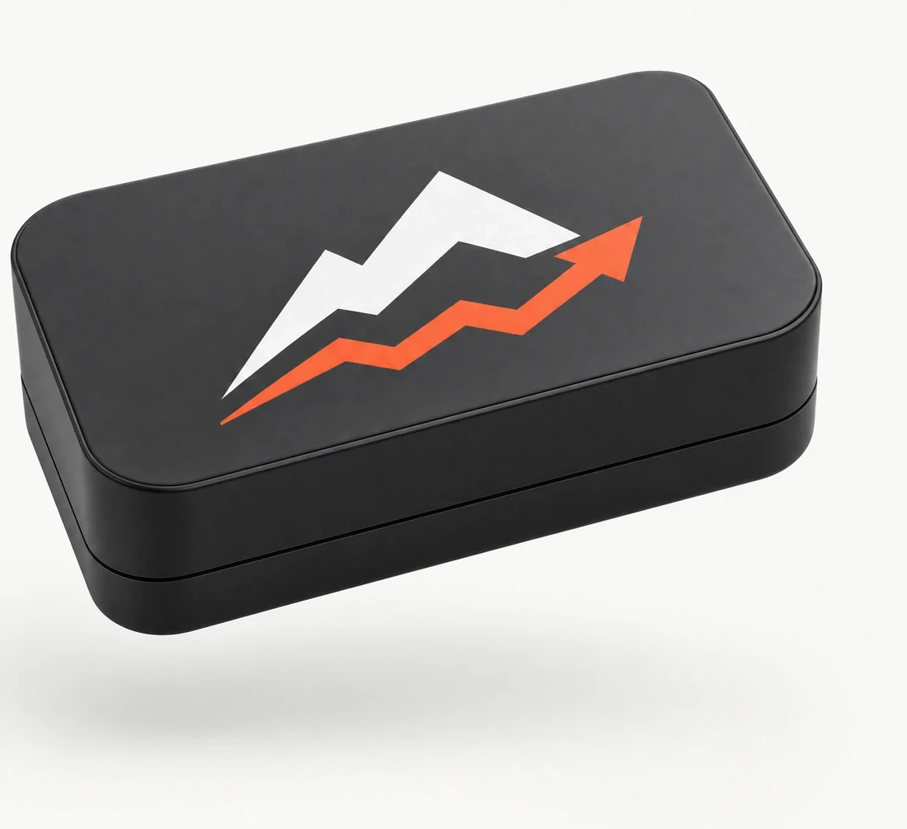
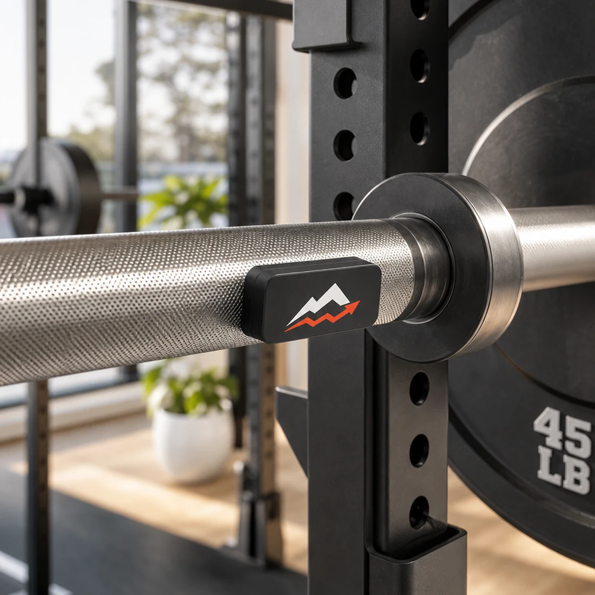

En el eje de la barra.
Colocá el sensor sobre el eje. Evitá la manga donde van los discos: esa parte puede girar.
Fuerza, con información.
No todo está en los kilos. La velocidad también cuenta. Estamos creando un sensor para que puedas verla, serie a serie.
Quiero seguir los avancesEn desarrollo en Uruguay. Todavía no está a la venta.

Más allá del peso
El peso y las repeticiones cuentan una parte de la historia. La velocidad agrega otra: cómo cambia tu movimiento a medida que avanzás.
BOOST busca acercar el entrenamiento basado en velocidad —VBT— a tu rutina. Un dato más para interpretar tu esfuerzo, junto con tus sensaciones y tu planificación.
De la barra a los datos
La idea es simple: ver la velocidad de cada repetición y comparar cómo evoluciona dentro de una serie.
Ejemplo ilustrativo de visualización. No son mediciones del prototipo.

DISEÑADO PARA ACOMPAÑARTEEl sensor
Un formato compacto que se fija con imanes al eje de la barra. Sin pantalla: la información se consulta desde la app.
Características del diseño actual, sujetas a validación con el prototipo.
Cómo está pensado
Del sensor a la serie, en tres pasos.
Colocá el sensor sobre el eje. Evitá la manga donde van los discos: esa parte puede girar.
Conectá por Bluetooth y tocá “Comenzar serie”. Dejá la barra quieta unos segundos para calibrar.
Consultá la velocidad de las repeticiones para sumar información a tus decisiones de entrenamiento.
Hecho desde Uruguay
Queremos mostrarte el proceso con la misma claridad que los datos. El sensor todavía tiene que demostrar su desempeño en el gimnasio.
Acompañá el desarrolloPruebas de software y simulación. Son una base de trabajo, no una validación en entrenamiento real.
Previsto para el 6 de octubre de 2026. Después toca medir, comparar y ajustar.
Contrastar repeticiones con video y evaluar la medición antes de definir el lanzamiento.
Antes de sumarte
Todavía no. Estamos desarrollando el prototipo y necesitamos validarlo en entrenamiento real. La lista es para recibir novedades; no es una compra ni una reserva.
El objetivo es que el sensor cueste menos de US$70. No es un precio final. La app tendrá una suscripción paga, cuyos planes todavía están por definir.
El primer prototipo está previsto para el 6 de octubre de 2026. El lanzamiento dependerá de los resultados de las pruebas. Avisaremos cuando haya una fecha confirmada.
Sí. El uso previsto requiere la app, una conexión Bluetooth y comenzar la serie desde el teléfono. El sensor no tiene pantalla.
Esto recién empieza
Dejá tu correo y enterate de los avances del prototipo, las pruebas y la disponibilidad.
Solo novedades de BOOST. Sin cobros ni compromiso de compra.